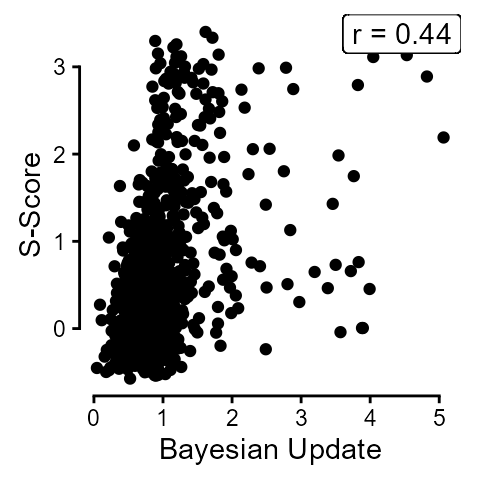
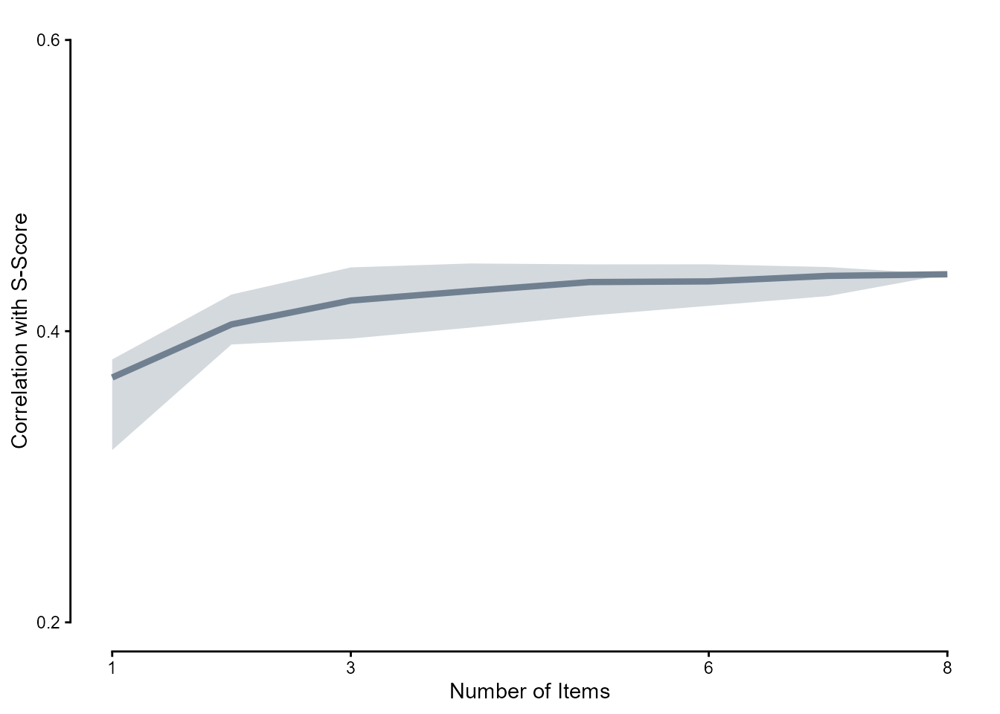
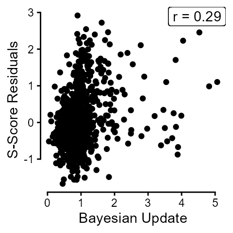
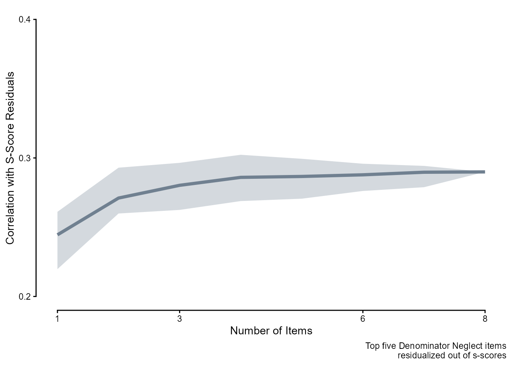
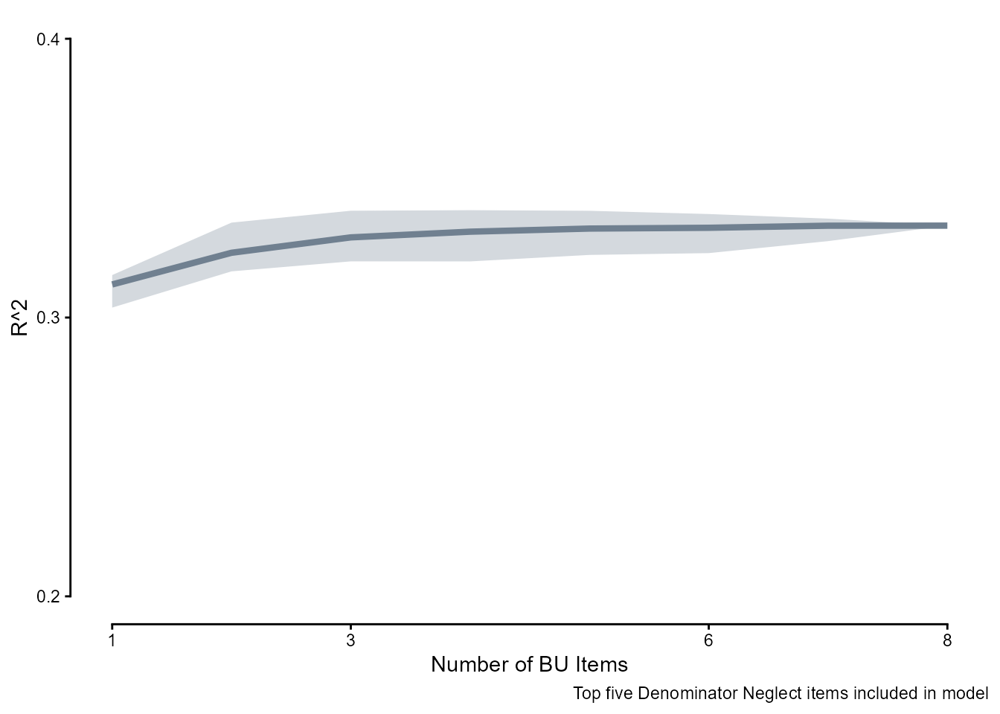

Code
library(tidyverse)Jessica Helmer
December 17, 2025
bu_full <- rio::import("https://raw.githubusercontent.com/forecastingresearch/fpt/refs/heads/main/data_cognitive_tasks/task_datasets/data_bayesian_update.csv")
anchoraig_full <- rio::import("https://raw.githubusercontent.com/forecastingresearch/fpt/refs/heads/main/data_cognitive_tasks/metadata_tables/task_aig_version.csv")
dn_dat <- readRDS(here::here("Data", "Denominator Neglect", "dn_dat.rds"))
dn_topitems <- readRDS(here::here("Data", "Denominator Neglect", "top_items.rds"))# calculates the correlation between a randomly sample group of `n_items` and s-scores
bu_func <- function(data, n_items, rep = 1:1) {
pmap(expand_grid(n_items = n_items, rep = rep),
\(n_items, rep) {
data |>
filter(unique_trial %in% sample(unique(unique_trial), n_items)) |>
# get person-level scores for both `sscore` and BU (`score`)
summarize(.by = subject_id,
sscore = first(sscore),
score = mean(score),
n_items = n()) |>
select(sscore, score) |>
drop_na() |>
summarize(n_items = n_items,
rep = rep,
cor = cor(sscore, score) |> abs())
}) |>
list_rbind()
}
# calculates the R^2 of a linear model with `n_items` BU items and the top five DN items
bu_r2_func <- function(data, n_items, rep = 1) {
pmap(expand_grid(n_items = n_items, rep = rep),
\(n_items, rep) {
data |>
filter(unique_trial %in% sample(unique(unique_trial), n_items)) |>
summarize(.by = subject_id,
sscore = first(sscore),
correct = first(correct),
score = mean(score),
n_items = n()) |>
select(sscore, score, correct) |>
drop_na() |>
summarize(n_items = n_items,
rep = rep,
r2 = lm(sscore ~ score + correct,
data = data.frame(sscore, score, correct)) |>
summary() |>
pluck("r.squared"))
}) |>
list_rbind()
}anchor_ids_e <- anchoraig_full %>%
filter(task == "bayesian_update_easy" |
task == "bayesian_update_hard") %>%
mutate(task_version = factor(ifelse(task == "bayesian_update_easy", "easy", "hard"))) %>%
select(!task) %>%
# because participants did more than one version in a session, need to specify both anchor and AIG both here and in the following assignment to get just the specific quadrant
filter(AIG_version == "anchor" & task_version == "easy") %>%
pull(session_id)
bu_dat_e <- bu_full %>%
arrange(session_id, unique_trial) %>%
# only anchor version and only easy version
filter(session_id %in% anchor_ids_e & version == "easy") |>
select(session_id, unique_trial, score) |>
left_join(rio::import("https://raw.githubusercontent.com/forecastingresearch/fpt/refs/heads/main/data_cognitive_tasks/metadata_tables/session.csv"),
by = "session_id") |>
left_join(rio::import("https://raw.githubusercontent.com/forecastingresearch/fpt/refs/heads/main/data_forecasting/processed_data/scores_quantile.csv") |>
select(subject_id, sscore_standardized) |>
# mean sscores per person
summarize(.by = subject_id,
sscore = mean(sscore_standardized)),
by = "subject_id") |>
select(subject_id, unique_trial, score, sscore) |>
# mean score per BU item (over the five trials)
# suggestion (maybe): do some trial-level stuff at some point?
summarize(.by = c(subject_id, unique_trial),
score = mean(score),
sscore = first(sscore))
saveRDS(bu_dat_e, here::here("Data", "Bayesian Update", "bu_dat_e.rds"))anchor_ids_h <- anchoraig_full %>%
filter(task == "bayesian_update_easy" |
task == "bayesian_update_hard") %>%
mutate(task_version = factor(ifelse(task == "bayesian_update_easy", "easy", "hard"))) %>%
select(!task) %>%
# because participants did more than one version in a session, need to specify both anchor and AIG both here and in the following assignment to get just the specific quadrant
filter(AIG_version == "anchor" & task_version == "hard") %>%
pull(session_id)
bu_dat_h <- bu_full %>%
arrange(session_id, unique_trial) %>%
# only anchor version and only easy version
filter(session_id %in% anchor_ids_h & version == "hard") |>
select(session_id, unique_trial, score) |>
left_join(rio::import("https://raw.githubusercontent.com/forecastingresearch/fpt/refs/heads/main/data_cognitive_tasks/metadata_tables/session.csv"),
by = "session_id") |>
left_join(rio::import("https://raw.githubusercontent.com/forecastingresearch/fpt/refs/heads/main/data_forecasting/processed_data/scores_quantile.csv") |>
select(subject_id, sscore_standardized) |>
# mean sscores per person
summarize(.by = subject_id,
sscore = mean(sscore_standardized)),
by = "subject_id") |>
select(subject_id, unique_trial, score, sscore) |>
# mean score per BU item (over the five trials)
# suggestion (maybe): do some trial-level stuff at some point?
summarize(.by = c(subject_id, unique_trial),
score = mean(score),
sscore = first(sscore))
saveRDS(bu_dat_h, here::here("Data", "Bayesian Update", "bu_dat_h.rds"))library(tidyverse)
bu_full <- rio::import("https://raw.githubusercontent.com/forecastingresearch/fpt/refs/heads/main/data_cognitive_tasks/task_datasets/data_bayesian_update.csv")
anchoraig_full <- rio::import("https://raw.githubusercontent.com/forecastingresearch/fpt/refs/heads/main/data_cognitive_tasks/metadata_tables/task_aig_version.csv")
bu_full |>
summarize(.by = trial,
draw = list(unique(current_draw))) trial draw
1 0 blue, red
2 1 blue, red
3 2 blue, red
4 3 blue, red
5 4 blue, red
6 5 red, blue
7 6 red, blue
8 7 blue, red
9 8 red, blue
10 9 blue, red
11 10 red, blue
12 11 red, blue
13 12 red, blue
14 13 red, blue
15 14 red, blue
16 15 red, blue
17 16 red, blue
18 17 red, blue
19 18 blue, red
20 19 blue, red
21 20 blue, red
22 21 red, blue
23 22 blue, red
24 23 blue, red
25 24 red, blue
26 25 red, blue
27 26 red, blue
28 27 blue, red
29 28 red, blue
30 29 red, blue
31 30 red, blue
32 31 red, blue
33 32 blue, red
34 33 red, blue
35 34 red, blue
36 35 red, blue
37 36 red, blue
38 37 blue, red
39 38 red, blue
40 39 red, blue trial ball_split draw
1 0 40,60 blue
2 1 40,60 blue
3 2 40,60 red
4 3 40,60 blue
5 4 40,60 blue
6 5 30,70 blue
7 6 30,70 red
8 7 30,70 red
9 8 30,70 blue
10 9 30,70 blue
11 10 40,60 red
12 11 40,60 blue
13 12 40,60 blue
14 13 40,60 red
15 14 40,60 blue
16 15 40,60 red
17 16 40,60 blue
18 17 40,60 red
19 18 40,60 red
20 19 40,60 red
21 20 30,70 blue
22 21 30,70 blue
23 22 30,70 red
24 23 30,70 blue
25 24 30,70 blue
26 25 30,70 blue
27 26 30,70 blue
28 27 30,70 red
29 28 30,70 blue
30 29 30,70 blue
31 30 40,60 blue
32 31 40,60 blue
33 32 40,60 blue
34 33 40,60 red
35 34 40,60 red
36 35 30,70 blue
37 36 30,70 red
38 37 30,70 red
39 38 30,70 blue
40 39 30,70 redThe following analysis only focuses on Bayesian Update: Easy
The overall correlation between mean scores on Bayesian Update and s-scores was 0.44.
bu_dat_e |>
filter(unique_trial %in% sample(unique(unique_trial), 8)) |>
summarize(.by = subject_id,
sscore = first(sscore),
score = mean(score)) |>
ggplot(aes(x = score, y = sscore)) +
geom_point() +
# chore: italicize "r"
geom_label(label = paste("r =", (bu_dat_e |>
summarize(.by = subject_id, sscore = first(sscore), score = mean(score)) |>
drop_na() |>
select(sscore, score) |>
cor() |>
round(2))[1, 2]),
x = Inf, y = Inf, hjust = 1, vjust = 1) +
labs(y = "S-Score", x = "Bayesian Update") +
guides(x = guide_axis(cap = "both"), y = guide_axis(cap = "both")) +
theme_classic() +
theme(aspect.ratio = 1)
We randomly selected \(n\) items where \(n \in [1, 8]\) and calculated the correlations between person-level mean scores on those \(n\) items and s-scores, doing 100 replications per \(n\).
bu_cors <- readRDS(here::here("Data", "Bayesian Update", "bu_cors.rds"))
bu_cors |>
summarize(.by = c(n_items),
across(cor, list(mean = mean,
lower = ~ quantile(.x, 0.05, names = FALSE),
upper = ~ quantile(.x, 0.95, names = FALSE)))) |>
ggplot(aes(x = n_items, y = cor_mean)) +
geom_line(linewidth = 1.5, color = "slategray") +
geom_ribbon(aes(ymin = cor_lower, ymax = cor_upper),
alpha = .3, fill = "slategray") +
scale_x_continuous(breaks = c(1, 3, 6, 8)) +
scale_y_continuous(breaks = c(.2, .4, .6)) +
coord_cartesian(ylim = c(.2, .6)) +
labs(y = "Correlation with S-Score", x = "Number of Items") +
guides(x = guide_axis(cap = "both"), y = guide_axis(cap = "both")) +
theme_classic() 
We first residualized out the effect of the top five Denominator Neglect items.
dn_topfive <- dn_topitems |>
pivot_longer(c(conf_item, harm_item),
names_to = "choice_type", values_to = "item") |>
filter(rank <= 5) |>
pull(item)
dn_topfivedat <- dn_dat |>
filter(item %in% dn_topfive) |>
summarize(.by = subject_id,
sscore = first(sscore),
correct = mean(correct)) |> # alert alert
drop_na()
dn_resids <- data.frame(subject_id = dn_topfivedat$subject_id,
residuals = lm(sscore ~ correct, data = dn_topfivedat)$residuals)The overall correlation between mean scores on Bayesian Update and s-score residuals was 0.29.
bu_dat_e |>
left_join(dn_resids, by = "subject_id") |>
mutate(sscore = residuals) |>
summarize(.by = subject_id,
sscore = first(sscore),
score = mean(score)) |>
ggplot(aes(x = score, y = sscore)) +
geom_point() +
# chore: italicize "r"
geom_label(label = paste("r =", (bu_dat_e |>
left_join(dn_resids, by = "subject_id") |>
mutate(sscore = residuals) |>
summarize(.by = subject_id, sscore = first(sscore), score = mean(score)) |>
drop_na() |>
select(sscore, score) |>
cor() |>
round(2))[1, 2]),
x = Inf, y = Inf, hjust = 1, vjust = 1) +
labs(y = "S-Score Residuals", x = "Bayesian Update") +
guides(x = guide_axis(cap = "both"), y = guide_axis(cap = "both")) +
theme_classic() +
theme(aspect.ratio = 1)
bu_cors_postdn <- readRDS(here::here("Data", "Bayesian Update", "bu_cors_postdn.rds"))
bu_cors_postdn |>
summarize(.by = c(n_items),
across(cor, list(mean = mean,
lower = ~ quantile(.x, 0.05, names = FALSE),
upper = ~ quantile(.x, 0.95, names = FALSE)))) |>
ggplot(aes(x = n_items, y = cor_mean)) +
geom_line(linewidth = 1.5, color = "slategray") +
geom_ribbon(aes(ymin = cor_lower, ymax = cor_upper),
alpha = .3, fill = "slategray") +
scale_x_continuous(breaks = c(1, 3, 6, 8)) +
scale_y_continuous(breaks = c(.2, .3, .4)) +
coord_cartesian(ylim = c(.2, .4)) +
labs(y = "Correlation with S-Score Residuals", x = "Number of Items",
caption = "Top five Denominator Neglect items\nresidualized out of s-scores") +
guides(x = guide_axis(cap = "both"), y = guide_axis(cap = "both")) +
theme_classic() 
To see how successful the combinations of the five Denominator Neglect items and \(n\) Bayesian Update items are at capturing forecasting ability, here is the \(R^2\) of a simple linear model with increasing \(n\) of Bayesian Update items in the person-level means scores.
bu_r2 <- readRDS(here::here("Data", "Bayesian Update", "bu_r2.rds"))
bu_r2 |>
summarize(.by = c(n_items),
across(r2, list(mean = mean,
lower = ~ quantile(.x, 0.05, names = FALSE),
upper = ~ quantile(.x, 0.95, names = FALSE)))) |>
ggplot(aes(x = n_items, y = r2_mean)) +
geom_line(linewidth = 1.5, color = "slategray") +
geom_ribbon(aes(ymin = r2_lower, ymax = r2_upper),
alpha = .3, fill = "slategray") +
scale_x_continuous(breaks = c(1, 3, 6, 8)) +
scale_y_continuous(breaks = c(.2, .3, .4)) +
coord_cartesian(ylim = c(.2, .4)) +
labs(y = "R^2", x = "Number of BU Items",
caption = "Top five Denominator Neglect items included in model") +
guides(x = guide_axis(cap = "both"), y = guide_axis(cap = "both")) +
theme_classic() 